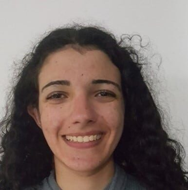
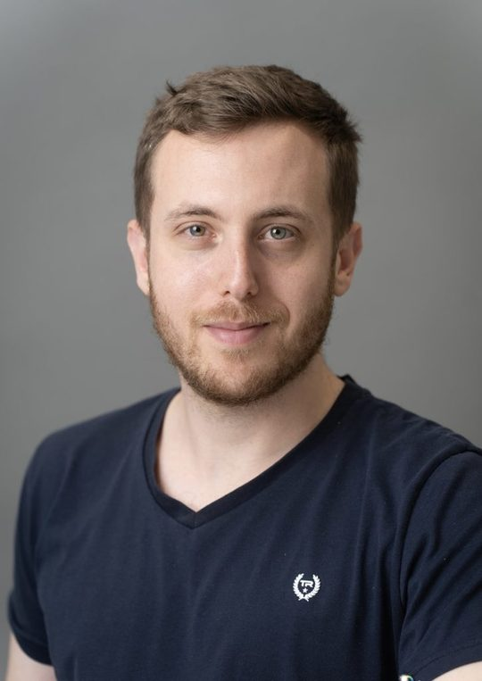
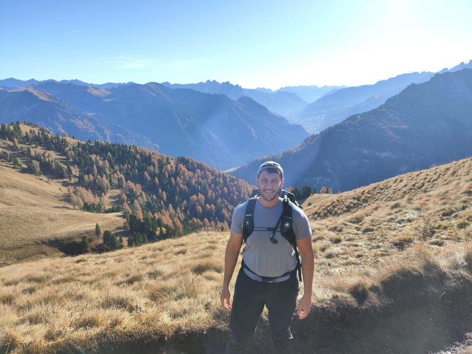
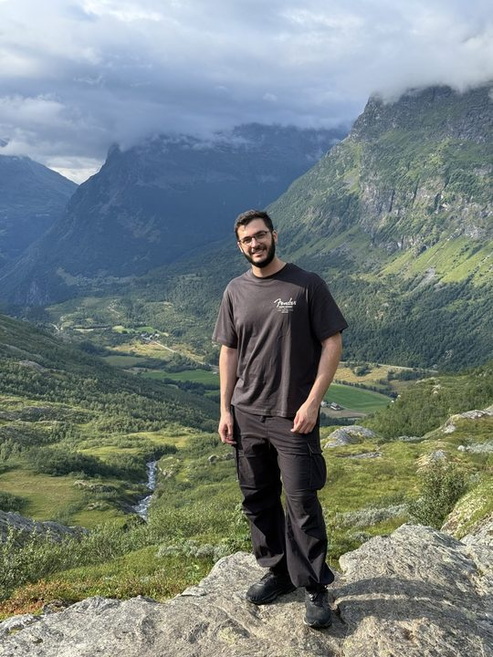
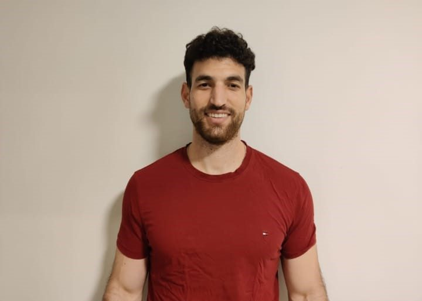
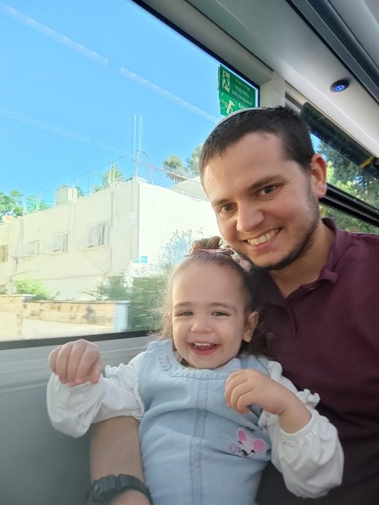

You, our students, are the main thing. You are the heart of the program and what makes it such a special program and therefore, we decided to send a short questionnaire to all the students (both recent and alumni) to get to know you a little more

Uri Gadot (Admitted to the program in 2009/10)
Petah Tikva
Sports (watching and doing) hiking and cooking
Dog
Anything really
Computer Networks, Computers, Signal and Image Processing, Machine Learning and Intelligent Systems
A trip and then an M.Sc.
Ori Schweitzer (Admitted to the program in 2006/7)
Playing the piano
Cat
Chocolate
Communication, Machine Learning and Intelligent Systems
Ameer Abu Hanna (Admitted to the program in 2009/10)
Mielya
To play chess and do music
Dog
Hamburger
Einstein
Control Systems and Robotics, Computers, Signal and Image Processing, Machine Learning and Intelligent Systems
For the time being I continue to work at Apple maybe I will do an M.Sc.
I had met someone in his last year when I was in my first year and we are still friends up untul today. A big thank you goes to the field trip that brought us together.

Shoham Grunblat (Admitted to the program in 2020/21)
Jerusalem
I really like swimming- I was really a professional competitive swimmer in the past. I enjoy swimming at a choir, baking cakes and solving riddles.
Grandma’s curry
Anthony Ervin-an olympic swimmer who has won two gold medals within a 16 years of a gap between them and has experienced a lot of physical and mental crises.
Communication, Computers, Machine Learning and Intelligent Systems
An M.Sc. And then create a start-up company that will bring about innovation in sports.

Tomer Tenne (Admitted to the program in 2020/21)
Tel-Aviv
To play the guitar and hiking
Hamburger
Computers, Machine Learning and Intelligent Systems

Shai Yehezkel (Admitted to the program in 2006/7)
Tel-Hashomer
basketball, watching the stars
Hamsters
Pizza
Margaret Hamilton
Control Systems and Robotics, Computers, Signal and Image Processing, Machine Learning and Intelligent Systems
Work within the industry and maybe an M.Sc.
Meeting new friends

Nina Katz Kalif (Admitted to the program in 2006/7)
Jerusalem
competitive navigation, reading, swimming, playing
Dog
Pistaschio
Marie Curie
Communication, Signal and Image Processing, Energy and Electric Power Systems

Moshe Lieblic (Admitted to the program in 2006/7)
Brooklyn, New-York
Hiking, sports (mainly football) and just going out for a beer
Pizza and an “until midnight” white chocolate snack
Computers, Biological Systems and Signals, Signal and Image Processing
A post Corona trip
The lectures are very interesting and help broaden the horizons for future research.

Stav Beno (Admitted to the program in 2020/21)
Haifa
Dancing, running and sports in general
Dog
Italian!
Computers, Machine Learning and Intelligent Systems, but I am still checking different directions. 🙂
I really enjoyed Dr. Weinberger’s lecture that dealth with machine learning in an unknown communication channel. As a second year student, I have, so far, gathered mainly mathematical background and it is only towards the last semester that I have started feeling more connected to Electrical Engineering. The lecture was delivered so well that I managed to understand everything and connect to it.

Ido Sobol (Admitted to the program in 2020/21)
Haifa
Music, writing, reading
French fries and a hamburger
Harmione Granger
Computer Networks, Computers, Signal and Image Processing, Electronic Systems and VLSI Systems, Machine Learning and Intelligent Systems
I would like to join the industry, do a postgraduate degree conduct research

Shadi Iskandar (Admitted to the program in 2019/20)
I was born in Nazareth
I used to play sports
Dog
My favorite food is grandma’s! Outside I like having salmon.
Michael Jordan. A person with great mental strength and knowledge as to how to make the most of his talent and to aim only at greatness.
Computers, Signal and Image Processing, Machine Learning and Intelligent Systems, Quantum Technology
An M.Sc. And then I would like to join the industry.

Noam Kasten (Admitted to the program in 2020/21)
Modiin-Macabim-Reut
To take pictures, to build drones, running, going out with friends, to watch things outside with the telescope, to read and learn new things. I still try to continue doing most of these things.
Cat
Knaffeh- when I feel like something sweet. Otherwise- a steak.
Richard Feynman, combinning meaningfull research, curiosity and an exquisite sense of humor
Machine Learning and Intelligent Systems, Quantum Technology, Astrophysics
I would say that the first meeting with the Dean was very interesting, personal and warm and that in spite of the fact that it was held via Zoom. It was also nice to find out moer about the other participants of the program.

Rotem Idelson (Admitted to the program in 2019/20)
Tel-Aviv
To dance, to draw and go on hikes in Israel
Dog
Mom’s sweet potato cannelloni
Yael Weizel, Electrical and Computer Engineering faculty graduate and the CEO of Zikit
Signal and Image Processing, Machine Learning and Intelligent Systems
An M.Sc. The only question is when.

Rotem Elimelech (Admitted to the program in 2020/21)
Ramla
I used to play the bass guitar, I read a lot and go on long runs.
Couscous and chicken soup
Electromagnetism and Photonics, Signal and Image Processing, Quantum Technology
I’m still undecided as to either continue to an M.Sc. or work for a start-up company.

Noa Shoham (Admitted to the program in 2019/20)
Lod
Dancing
Sushi
Computers, signal and image processing, machine learning and intelligent systems
M.Sc.
Itamar Nirenberg (Admitted to the program in 2021/22)
Israel
Machine Learning
Tennis and running
Exposure to faculty members and many opportunities to carry out projects at a very advanced level and of a research nature

Dima Dabah (Admitted to the program in 2021/22)
Pasta
To watch movies
Dog
Micro Nano
Stunning experience
Great opportunity to meet special and nice people.
An option to personally get to know many researchers from different fields and hear about their research, the program helps all students interested in a master’s degree

Nir Tevet (Admitted to the program in 2021/22)
ML & Computer Vision
The program is very enriching, helps create personal connections with outstanding students in the faculty, and provides a glimpse into the faculty’s research. Additionally, the research project offers a practical and enriching research experience. And of course, the program is also cohesive and fun.
M.Sc at the faculty

Midan Zehavi (Admitted to the program in 2021/22)
Israel
Sphynx cat
Pizza
Machine learning, electromagnetism, and photonics
A very positive experience. The lessons were high quality. The meetings were interesting and enjoyable.

Daniel Kelly (Admitted to the program in 2022/23)
Israel
Sphynx cat
Sports, movies, music and computer games
Ribeye steak
Communication and Information
Master’s degree alongside working at Apple
Interesting lectures that exposed me to work in the faculty and areas of interest that are not really covered in a bachelor’s degree, which was very interesting. The program also quite convinced me to pursue a master’s degree, something I had been unsure about beforehand. Additionally, the support received from the program was very nice throughout the degree.

Suf Rubinshtein (Admitted to the program in 2021/22)
Israel
Gym, basketball, hiking
Computer architecture, deep learning
Participation in the program was an enriching experience – we were exposed to interesting lectures by researchers and industry professionals, acquired new knowledge, and broadened our horizons. The program encourages the pursuit of excellence while also providing a social framework with enjoyable annual team-building days.

Haggai Shlesky (Admitted to the program in 2022/23)
Israel
All types of meat
Computer Architecture, Computer Networks, VLSI
Processor Architect at Intel
A program that is both educational and enriching, very interesting to attend lectures and learn about the various research fields in the faculty.
Amit Shalev (Admitted to the program in 2021/22)
Israel
Doesn’t have a pet
To play music and to travel
Italian
Reinforcement learning, signal processing
To go on a big trip, work, and later pursue a master’s degree
The program is very helpful in deepening your understanding in areas that interest you.
Gali Eitan (Admitted to the program in 2021/22)
Israel
A dog
Swimming and surfing
Bolognese pasta
Signal processing, quantum technologies, and astrophysics
To continue progressing and researching in academia
An excellent experience, I received a lot of support from the program staff who helped me progress at my own pace, challenge myself, and develop academically. I enjoyed coming to meet everyone and broaden my horizons during the semester’s meetings, and the annual trip was just incredible. Much of it was thanks to the wonderful Timor, who is truly amazing!

Hadar Ben Lulu (Admitted to the program in 2023/24)
Israel
Music (guitar), sports, the sea
Ice cream
Electro-optics, physics
To contribute something to science/technology
The program exposes its participants to a wide range of fields and interesting researchers.

Yuval Draizen (Admitted to the program in 2023/24)
Israel
Trips, food
Hamburger
Machine learning, computers, control
Very enriching and educational! I was exposed to many diverse fields that influenced my choice of areas of specialization. It’s fun to be part of the program!!

Yuval Draizen (Admitted to the program in 2022/23)
Israel
Gym, movies, and board games
Pizza
Machine learning, computers
Master’s degree
The program was an excellent experience – a combination of great people, exposure to research, and excellent lectures by faculty members.

Tomer Biran (Admitted to the program in 2022/23)
Israel
Gym, music performances, trips, and hiking
Hummus, steak, and pizza
low level programming, signal and image processing, machine learning
DSo
The program was an excellent experience – a combination of great people, exposure to research, and excellent lectures by faculty members.

Omer Bibi (Admitted to the program in 2022/23)
Israel
Cat
Machine learning, signal processing
I can wholeheartedly recommend the program; the sessions are always interesting, and you may also encounter fields that you perhaps haven’t been exposed to enough (or at all) during your studies. In every session, a faculty member comes to give a taste of their research. Sometimes people from the industry also come, and I liked that too. You can connect with senior students (and over time also younger ones), which is always good. As part of the program, you conduct a research project, and in my opinion, it’s a nice opportunity compared to a regular project, and in any case, the supervisors are always happy to hear that you are from the program.

Osaid Greiv (Admitted to the program in 2023/24)
Israel
Spending time with family and friends, riding a bike, hiking, and playing as a goalkeeper in soccer
Pasta in tomato sauce that mom makes
Electromagnetism, signals and communication, solid state and nanoelectronics… and maybe quantum
I feel good when I explain things to others, so I plan to become a lecturer. In addition, I want to raise a dog or a cat.
The enrichment lectures exposed me to interesting fields in the faculty, and I met quality people who were fun to talk and converse with. (The choice of trips was excellent)